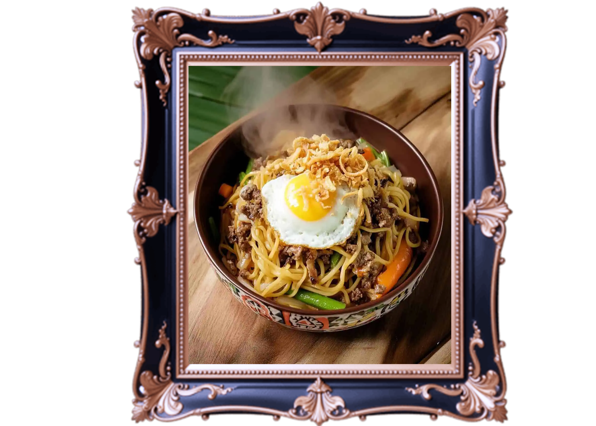
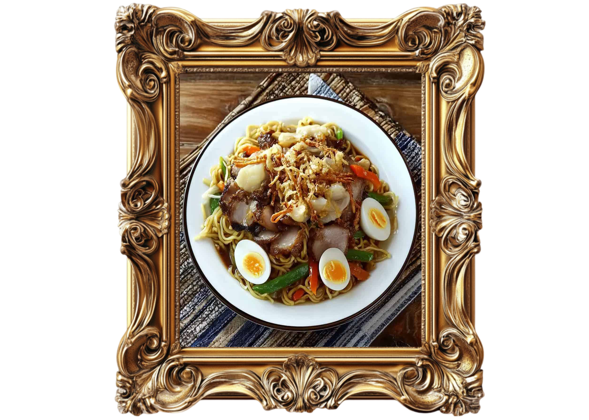
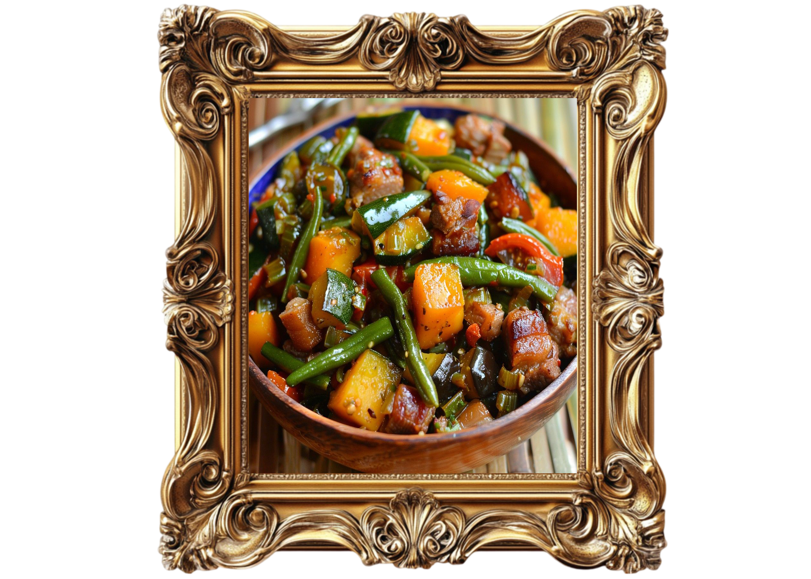
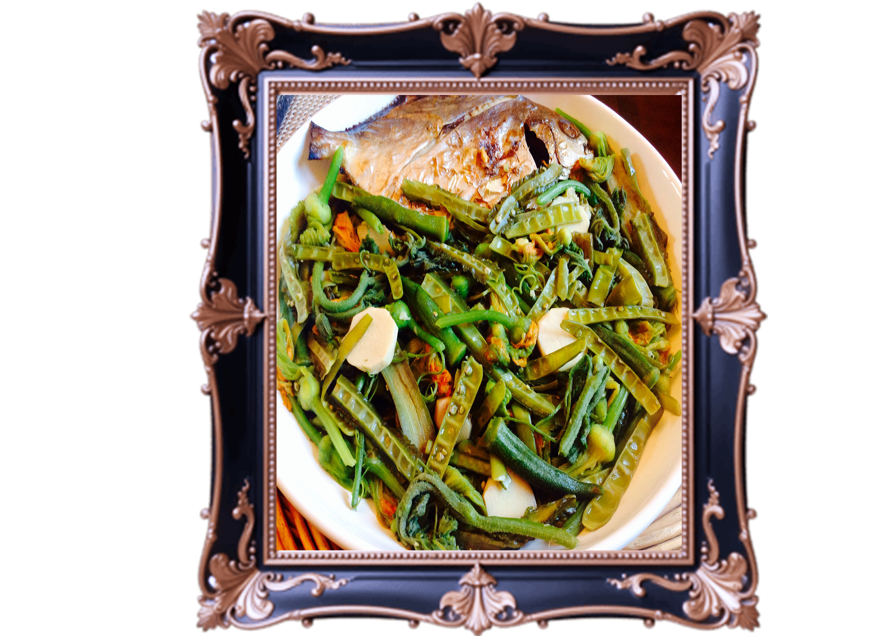
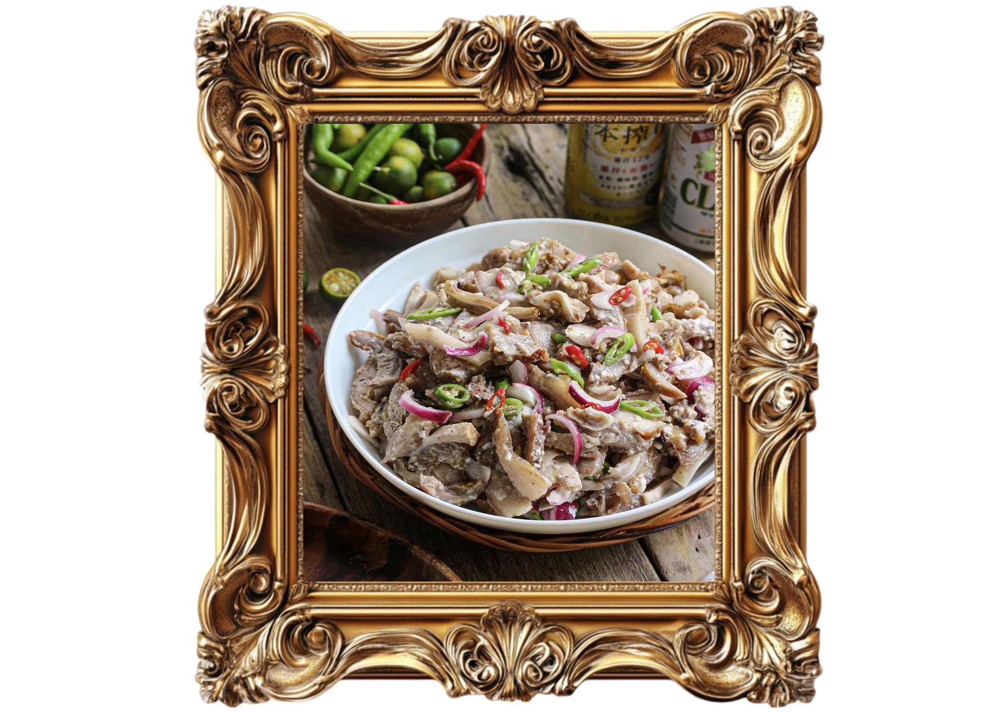
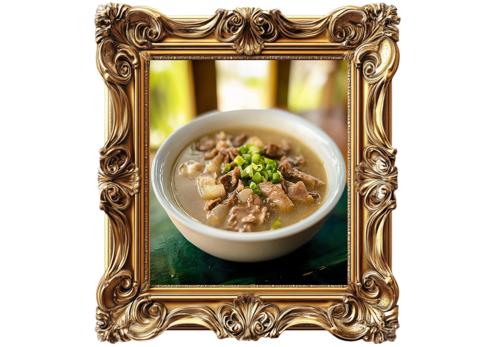
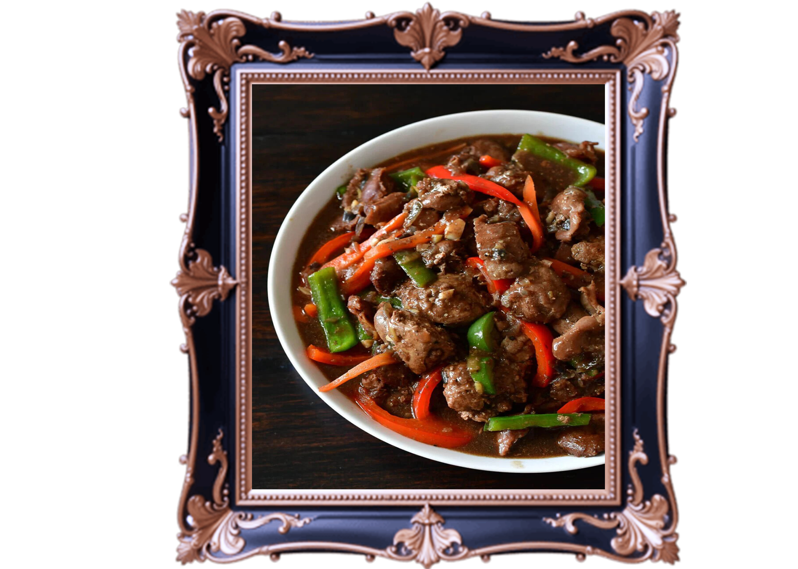
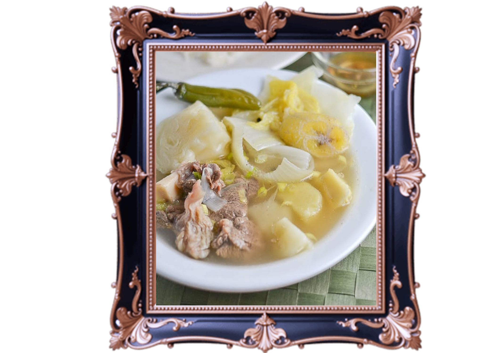

A famous culinary landmark of
Tuguegarao, Cagayan.

A famous noodle dish that originated
in Cabagan, Isabela, Cagayan Valley.

A traditional vegetable dish that
originated in the Ilocos Region
of Northern Philippines.
A traditional Ibanag noodle soup
that originated in Cagayan Valley,
particularly associated with
Tuguegarao City, Cagayan

A traditional dish made from variety
of local vegetables originated in the
Ilocos Region of Northern Philippines.

A popular Ilocano delicacy made from
grilled or boiled pork parts that
originated in the Ilocos Region
of Northern Philippines.

A traditional soup known for its
distinct bitter taste associated
with Ilocano cuisine in Northern
Luzon.

A traditional dish made from
combining pork, organ meats that
originated in the Ilocos Region of
Northern Philippines.

A traditional boiled-meat soup
associated with the food culture
of Cagayan and parts of Northern
Luzon.
A traditional mung bean dish
commonly cooked in Cagayan
Valley and Northern Luzon.